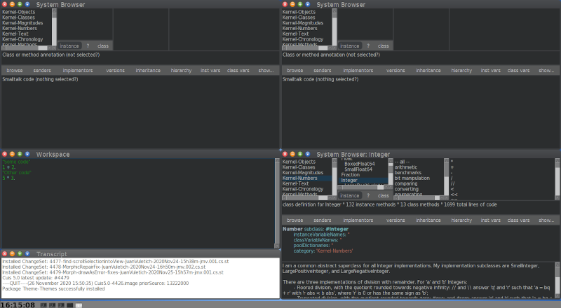

9.5 Daily Workflow
For our Spacewar! game, we created a dedicated package
Spacewar!.pck.st file. This is the way to go when writing
external package: define a dedicated package and from time to time
save your work with the save button in the Installed Packages
tool (See Figure 2.3).
Cuis-Smalltalk uses GitHub to host, version, diff its core development and to
manage a set of external packages (i.e. code that is maintained
independently and outside Cuis-Smalltalk but closely related to it).
Package files are simple text files, encoded for latin alphabet (ISO
8859-15) and handled without problems by GitHub. Cuis-Smalltalk uses the LF
(ascii code 10) newline convention, as preferred in GitHub. This
allows Git/GitHub to diff versions, and merge branches.
Separate GitHub repositories are used for projects, i.e. package or
set of closely related packages that are always loaded and maintained
together as a whole.
Your daily workflow with Cuis-Smalltalk to develop an external package will
look like:
- Start with a standard, fresh, Cuis image. Never save the
image.
- Set up your preferred version control system to manage your
external packages. The recommendation is to use a GitHub repository
with a name beginning with ’Cuis-Smalltalk-’, so it will be easy for
anybody to find it. But beside this consideration, using any other
version control system is fine.
- Install the necessary packages from the Cuis-Smalltalk Git
repositories.
- Develop. Modify and/or create packages.
- Save own packages (to your preferred repositories).
- add / commit / push accordingly to your version control system
- Fileout changes that are not part of any package. These are
automatically captured in numbered changesets, separated from
changes to packages.
- Exit the image. Usually without saving.
 In addition to adding a package preload requirement,
you can also select a requirement and
In addition to adding a package preload requirement,
you can also select a requirement and delete or update
it using the buttons at the lower right. Sometimes a package changes
which your code depends on and you have to change your code to accord.
When this happens, to want to be sure to require the newer, changed
version. Selecting a requirement and pressing update
will update the requirement to use the latest loaded package version.
9.5.1 Automate your image
As described in the daily workflow, it is a good habit to not save the
whole image but only the modified package of the edited source
code. However, each time we start a coding session, it is tedious to
set up the image to fit our personal needs and taste.
Things one may want to personalize in the image are:
- Preferences adjustments,
- Placement of tools like System Browser, Workspace, Transcript,
- Default contents in the Workspace, ready to be executed,
- Installation of Packages.
We want to record these image preferences in a
setUpEnvironment.st script to be executed at start up. On
GNU/Linux, you ask Cuis-Smalltalk to run a script with the -s, for
example squeakVM Cuis5.0.image -s setUpEnvironement.st where
setUpEnvironement.st. is a file containing Smalltalk code. A
real life example may look like:
../cogspur/squeak Cuis5.0-4426 -s ../scripts/setUpEnvironment.st
We describe in detail an example of a set up script organizing the
environment as seen in Figure 9.13. It is interesting
Smalltalk code poking around heterogeneous areas of Cuis-Smalltalk like the
developer tools, the Morph system, the preferences and collection
handling.

Figure 9.13: Environment of an image started with the set up script
Let’s start by removing the open windows:
| list |
"Delete all windows but the taskbar"
list := UISupervisor ui submorphs reject: [:aMorph |
aMorph is: #TaskbarMorph].
list do: [:each | each delete].
The whole user interface world of Cuis-Smalltalk is a kind of Morph, a
WorldMorph instance. Its submorphs are windows, menus, the
taskbar or any kind of morph the user can interact with. To access
this WorldMorph instance you ask to the UISupervisor
with the #ui message. Once we select all the morphs in the world
but the taskbar – really #reject: it – we #delete them
from the world.
Next, we change the preferences:
| list morph |
../..
"Change to Dark theme"
Feature require: #'Theme-Themes'.
DarkTheme beCurrent.
"Adjust font size"
Preferences smallFonts.
"Adjust taskbar size"
morph := UISupervisor ui submorphs first.
morph scale: 1 / 2.
We require Theme-Themes package; as it is not installed on the default
image, it will be searched on the disk for installation. Regarding the
taskbar access, remember we deleted all the morphs but the taskbar
from the world, therefore the taskbar is really the first in the sub
morphs collection of the world.
Before installing the tools, we ask a RealEstateAgent the free
area. Sadly this agent does not take into consideration the area
occupied by the task bar, so we need to tweak its answer. Then we
compute a quarter of this free area extent (half in width and half
in height make a quarter of the whole free area):
| list morph area extent |
../..
"Compute the available free space for windows placement"
area := RealEstateAgent maximumUsableArea
extendBy: 0 @ morph morphHeight negated.
extent := area extent // 2.
Now we are ready to install a few tools. First three browsers each
occupying a quarter of the screen:
"Open a few System Browsers"
BrowserWindow openBrowser
morphBounds: (0 @ 0 extent: extent).
BrowserWindow openBrowser
morphBounds: (area width // 2 @ 0 extent: extent).
"Open a System Browser on a specific class"
morph := BrowserWindow openBrowser
morphBounds: (area extent // 2 extent: extent).
morph model setClass: Integer selector: nil.
Then in the remaining free quarter, we install a workspace occupying
two thirds of the area and a transcript one third. The workspace is
installed with some default contents. We need to hack a bit because
when asking for a new Workspace, Cuis-Smalltalk does not answer the created
instance, we have to search it in the windows of the world.
"Open a Workspace with some default contents"
Workspace openWorkspace.
morph := UISupervisor ui submorphs detect: [:aMorph |
aMorph class = WorkspaceWindow].
morph model actualContents: '"Some code"
1 + 2.
"Other code"
5 * 3.'.
morph morphBounds:
(0 @ (area height // 2)
extent: extent x @ (2 / 3 * extent y)).
"Open a transcript for logs"
TranscriptWindow openTranscript morphBounds:
(0 @ (area height // 2 + (2 / 3 * extent y))
extent: extent x @ (1 / 3 * extent y )).
Of course you should adjust the argument of the #actualContents:
message to meaningful code for your usage.